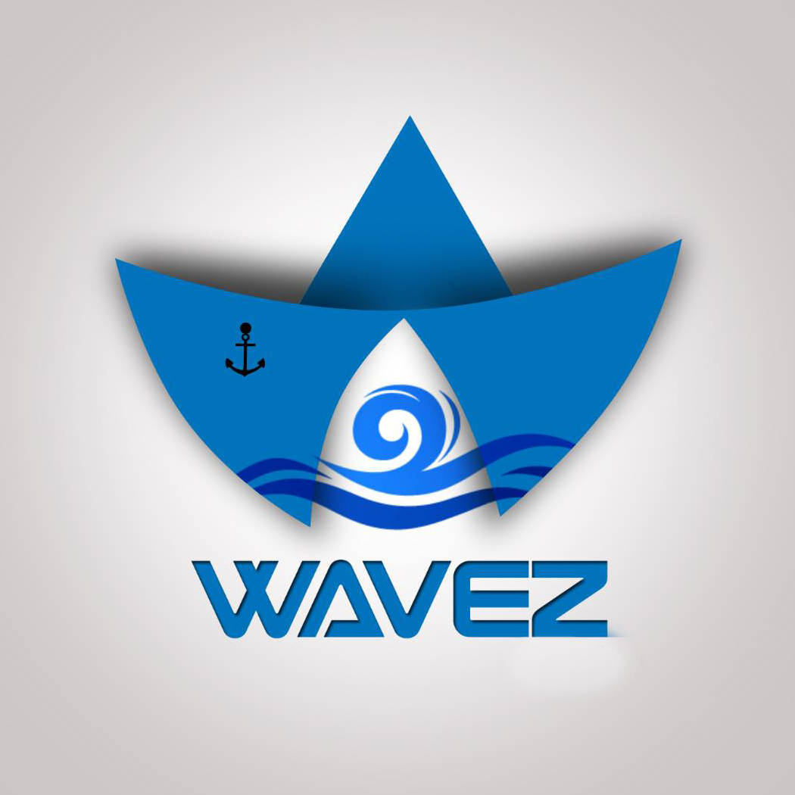

Wavez is the annual techno-cultural festival of the Department of Ocean Engineering at IIT Madras. It involves both Technical and Cultural events and is aimed at increasing the intra-department and inter-department interactions.
It is attended by roughly 500 students of IIT Madras and many more across chennai. It is considered as knowledge hub of Naval architecture and ocean engineering field.
The festival provides a solid platform for people to learn about our work and develop an interest, also a place for those in our department to pit their skills and knowledge against each other.
contact@wavez.co.in
Wavez © 2017